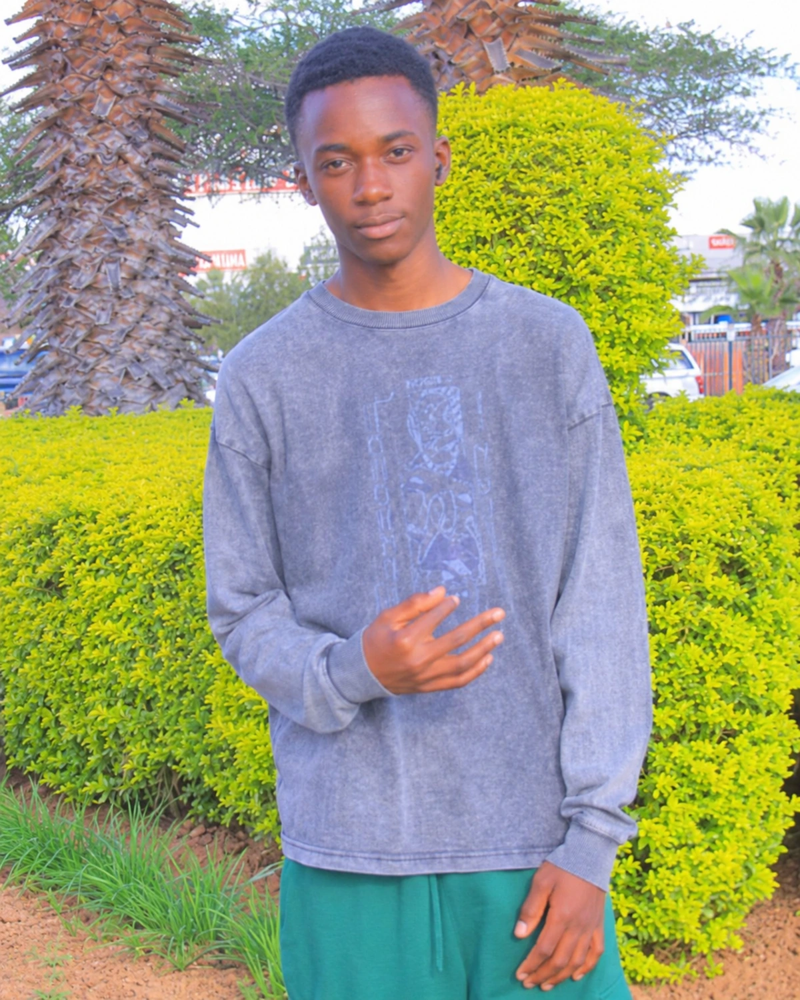
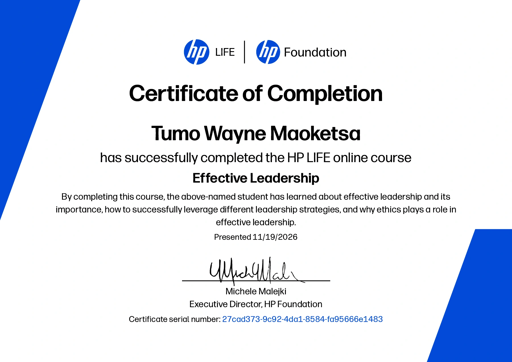
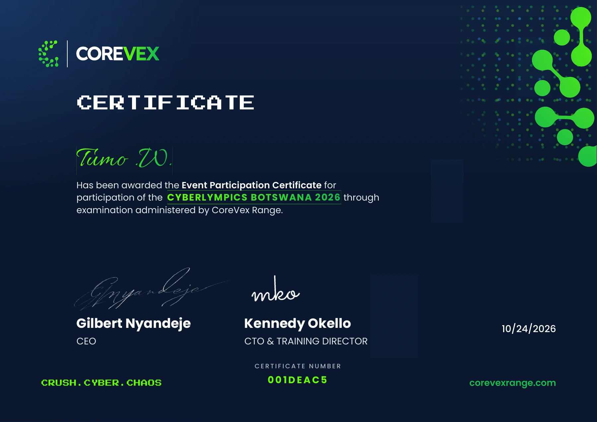
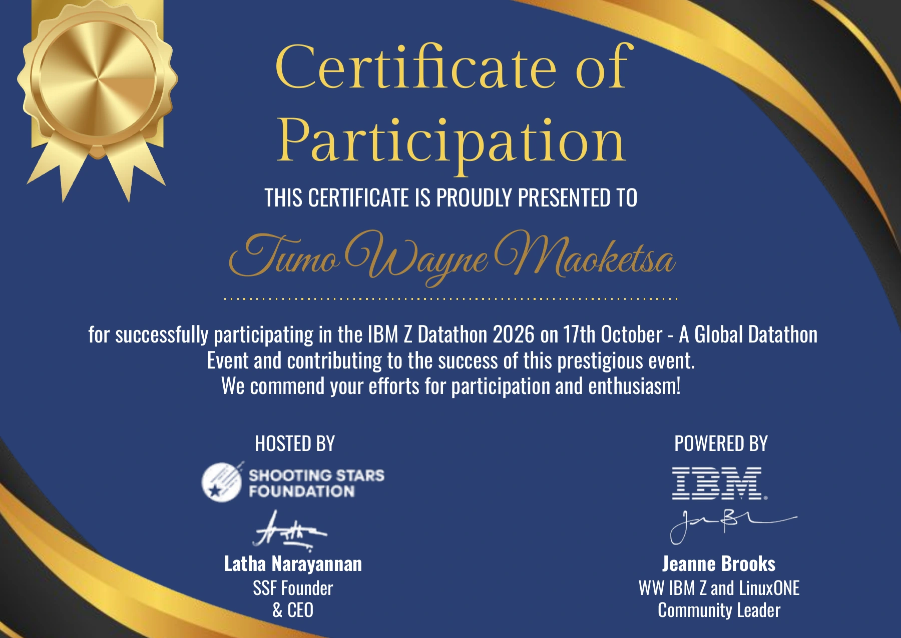
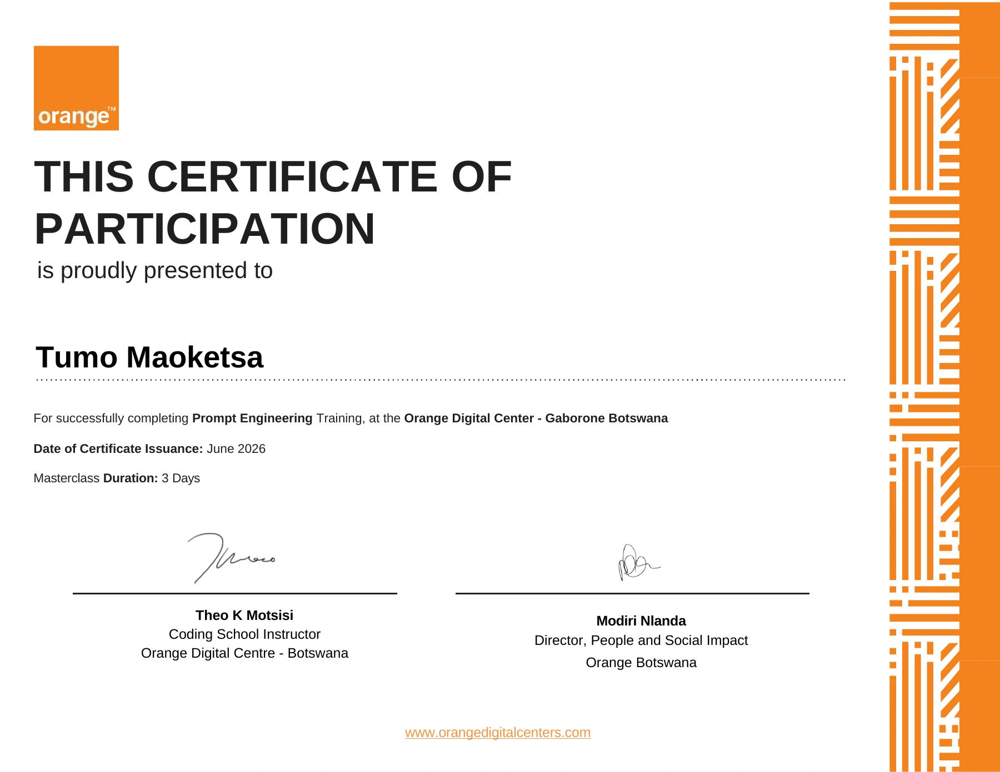

2026 · In progress
FNB App Academy
Started earlier in 2026. Expected completion in December 2026.
I’m studying for a BSc in Financial Technology at Botswana School of Business Sciences. My current projects explore fraud detection, budgeting and designing for limited connectivity.
Download CV
I’m a developer and tech enthusiast. I’m interested in what happens when financial tools meet everyday problems, from spotting unusual transactions to budgeting when your income varies from month to month.
As Public Relations Officer for the JETS Club (Junior Engineers, Technicians and Scientists), I help with member communications and presentations.
2026 · In progress
Started earlier in 2026. Expected completion in December 2026.
19 November 2026
Completed the HP LIFE online course on leadership strategies and the role of ethics in leadership.

2026
Placed 20th out of more than 100 participants. CoreVex Range issued an Event Participation Certificate on 24 October 2026.

17 October 2026
Certificate of participation in the 2026 global datathon.

2026
Completed the three-day Prompt Engineering training at Orange Digital Center in Gaborone. Certificate issued in June 2026.

2024 and 2025
Two Distinguished Excellence awards from Tutume McConnell College.
I wrote the original portfolio code. I used AI to revise the writing and help with specific edits to the site and homepage portrait.